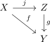
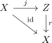
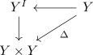
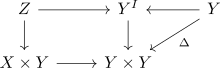
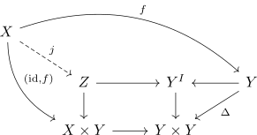
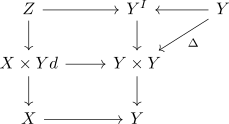
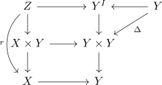
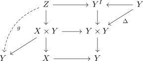
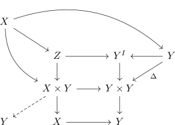

factorization lemma for fibrant objects
Proposition
Let $\mathcal{C}$ be a category of fibrant objects. Let $f: X \rightarrow Y$ be a morphism (necessarily between fibrant objects).
Then there exists a factorization

where
- $g$ is a fibration
- $j$ is split mono and weak equivalence which has a trivial fibration $r$ as one-sided inverse

Proof
construction of morphisms
choose a very good path object $Y^I$. Then consider

and take the pullback

using the universal property we get an induced map

which is the map $j$
then we may apply the glueing lemma for pullbacks

where one checks that the bottom square is a pullback and conclude that the outer square is a pullback.
to get our retraction $r$, we take the projection out of $X$

finally we construct $g$ as composition

which will be a trivial fibration.
fibration
- $g$ is the pullbakc of $Y^I \rightarrow Y \times Y$ which is a fibration
- $r$ is the pullback of $Y^I \rightarrow Y$ which is a trivial fibration: projection out of a good path object as weak equivalence &
